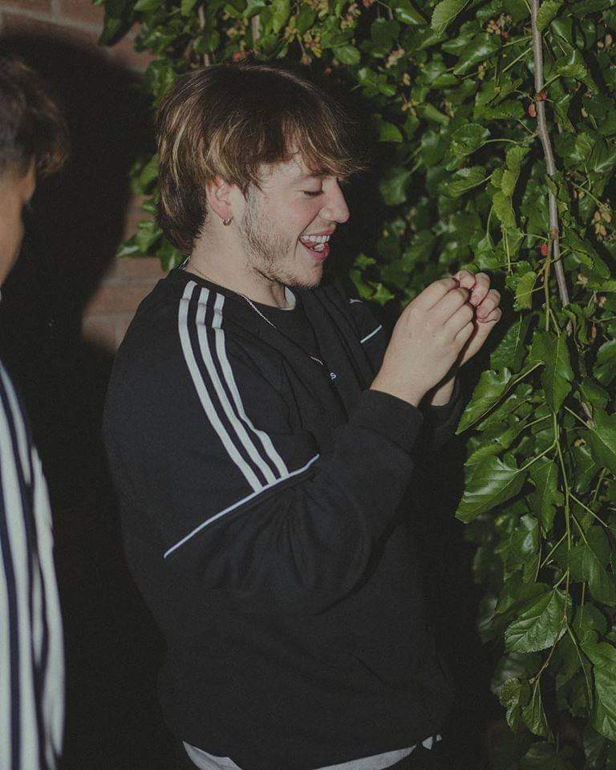

"Que me critiquen todo lo que quieran, total todo lo que hago lo hago a mi manera"
"LA VIDA NO SE TRATA DE SER UN GANADOR O PERDEDOR, SE TRATA DE SER UNO MISMO Y DAR LO MEJOR".
Paulo Londra (12 de abril de 1998) cantante y compositor de Rap y Trap. Nació en ciudad de Córdoba, Argentina. El cantante creció en un hogar muy unido; asegura que su familia siempre estuvo muy al tanto de su crecimiento y que lo han apoyado en su carrera musical. Desde los 15 años demostró su habilidad para improvisar y competir en batallas de rap callejeras. En ellas, adquirió experiencia para participar en eventos formales del género.
INICIOS DE PAULO LONDRA
Todo comenzó en las batallas improvisadas de freestyle. Su primera batalla de rap fue en la Plaza de la Intendencia, dónde comenzó a vivir y a abrir camino en las grandes ligas del trap latino. En el año 2017 participó en una batalla contra el reconocido artista Duki en YouTube. Allí ganó reconocimiento y una amplia popularidad entre los fieles del género gracias a su destacada participación, se ganó el respeto de otros artistas. Confiado en su talento tomó la decisión de participar en Sin Escritura y luego en El Quinto Escalón, este es un evento urbano muy importante en el mundo hispano. Para su fortuna se quedó con el primer lugar, y para ese momento adquiere reconocimiento internacional. Posteriormente, su enfoque comenzó a ser irrumpir en la industria musical urbana. Cuestión que va avanzando, ganando más minutos en la radio de otros países, especialmente de América Latina, ganando seguidores, visualizaciones en las plataformas musicales y premios. Su mayor influencia es el rapero Eminem, fue en el momento que vio el film 8 Mile, que decidió seguir pasó a paso su carrera y ser como él. Comenzó al tiempo que artistas como Lit Killah, Kodigo y Duki, con ellos se encontró en diferentes competencias como, por ejemplo: A Cara de Perro Zoo. A su corta edad ya lidera el género del trap en Argentina; sus temas tienen más de 20 millones de reproducciones en Spotify. Bajo un sello independiente el artista ha lanzado el sencillo debut, titulado Relax. El 4 de diciembre estrenó Condenado Para el Millón. Comenzando el año 2018 publicó Nena Maldición, junto a Lenny Tavarez. Meses después se vio colaborando con los reconocidos artistas de Piso 21, en el sencillo titulado Te Amo. A este trabajo surgió Dímelo, y también Chica Paranormal, muy exitoso. El 2 de agosto del 2018, grabó Cuando Te Besé, junto a la famosa Becky G. hace muy poco tiempo salió al público Adán y Eva, tema que ha tenido una gran acogida. Mantiene muy buenas relaciones con artistas del trap colombiano como J Balvin. Paulo Londra se ha inspirado en artistas como: Fianru y Movimiento Original, de quienes adquirió algunos aspectos de la entonación. También se ha nutrido de la música de Cosculluela, Los Rolling Stone y Bad Bunnypara trabajar en la creación de melodías nuevas con ritmos innovadores y versátiles. Gracias a esto sus canciones se han popularizado en gran medida y esto también se ha reflejado en su cuenta oficial de Instagram, que por el momento tiene 4.4 millones de seguidores. Ha logrado la colaboración de artistas como Ovy on the drums, un productor de trap. Posee un lugar privilegiado en las listas musicales de Argentina. Nena Maldición ingresó a lista de las 20 tendencias más importantes de Latinoamérica. El artista es seguidor del país colombiano, destaca su belleza, especialmente de la ciudad de Medellín. Ha venido al país para grabar el videoclip oficial de Te amo, de Piso 21. Aquí estuvo cerca a importantes artistas del medio, entre ellos: De La Ghetto, J Balvin, Justin Quiles, Karol G, Mike Bahía y Mario Bautista. El videoclip contó con la dirección de Paloma Valencia. Rápidamente el vídeo alcanzó más de un millón de visualizaciones, como consecuencia llegó al puesto 9 en tendencias. Del mismo modo, se convirtió en el vídeo más trendy de la plataforma digital, convirtiéndose en el artista argentino más escuchado del género en Spotify, superando a Abel Pintos que tiene un millón. El 28 de septiembre del 2018 realizó un show en el teatro Gran Rex. Tambien estuvo hace poco en la capital chilena donde fue recibido por una gran cantidad de seguidores y su nueva tema Adán y Eva fue muy coreado. Ha impulsado su carrera lentamente, y aunque ahora estudia Derecho ha decidido dedicarle más energías a la parte musical.